I have spent around 250 hours in Pokemon Emerald alone and enjoyed the game greatly. Through playing, I have completed the entire Honen Dex. Here is the highlights of my story.
My favorite starter is mudkip because of how cute he is as well as his cracked moveset. Other team members were just random pokemon that I caught along my travels.
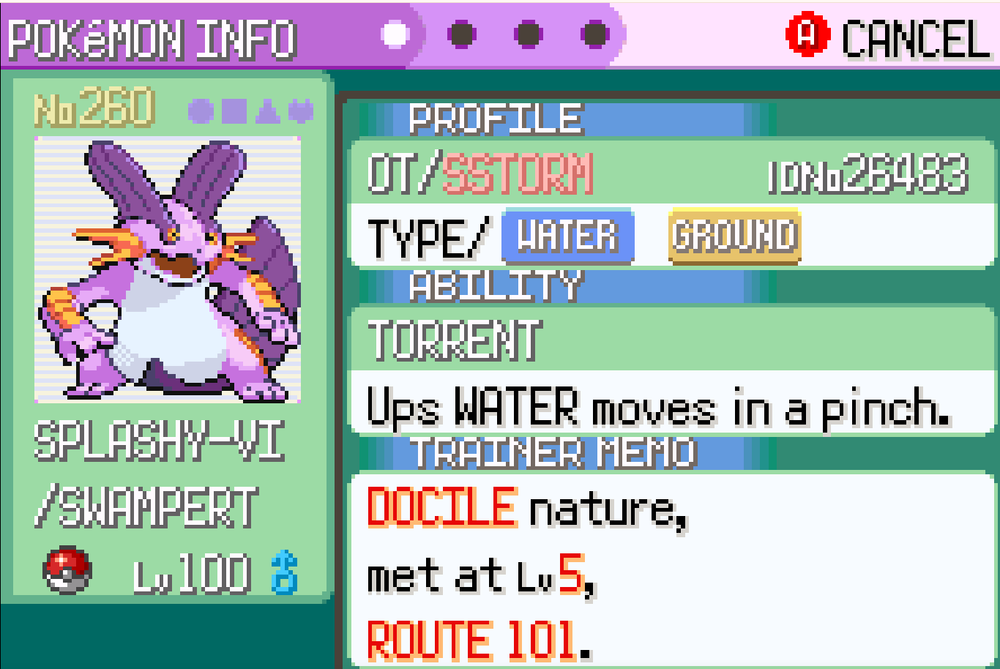
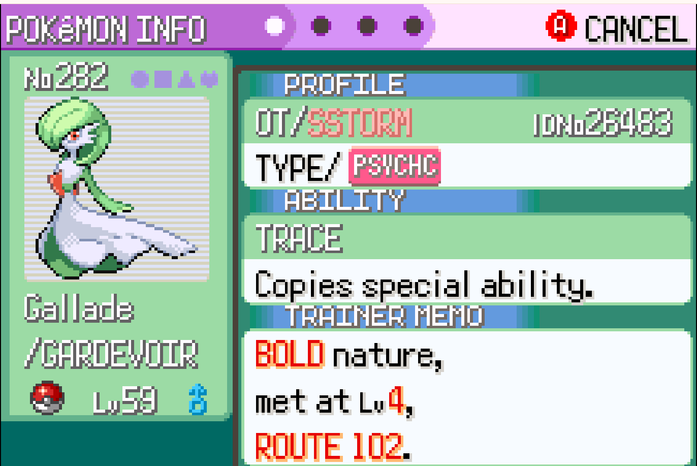
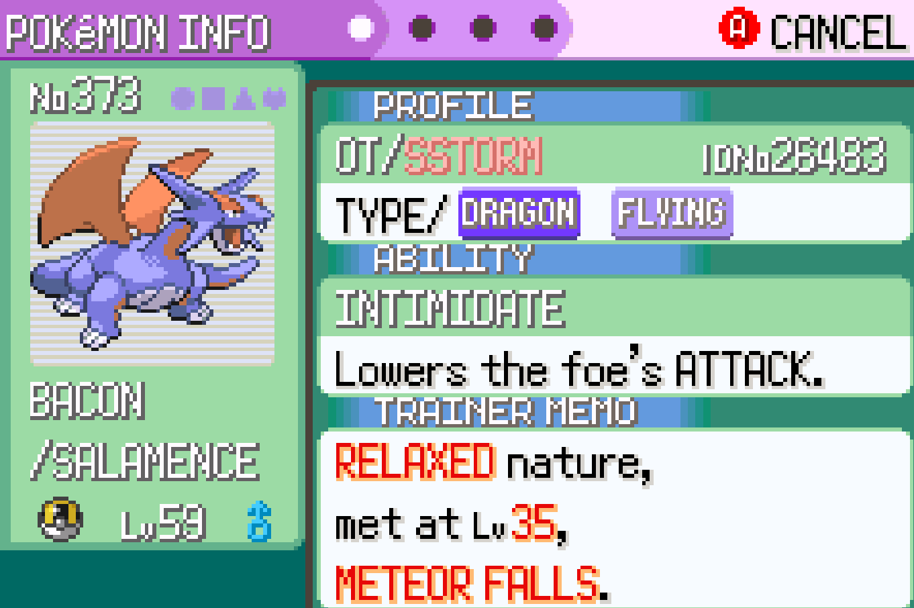
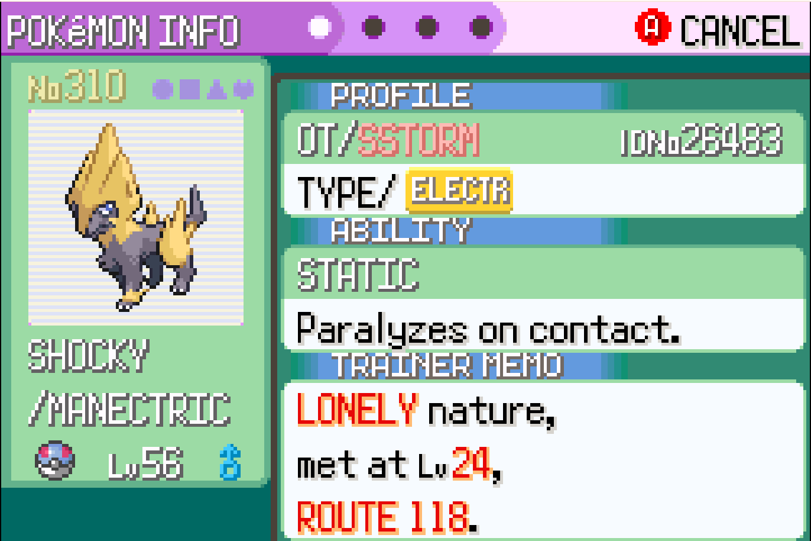
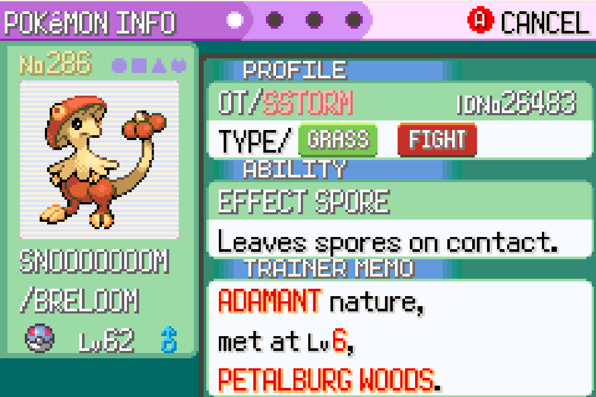
While completing the pokedex, I also spent time shiny hunting certain mons, each one took a decent time but not too long due to a good Trainer and Secret ID. Praise Emeralds broken seed and rng!
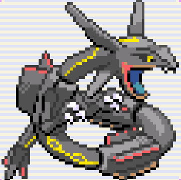
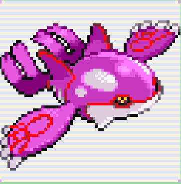
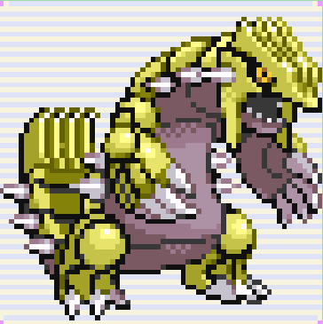
The hardest shiny to obtain was definately groudon which for some reason just refused to become yellow for me.
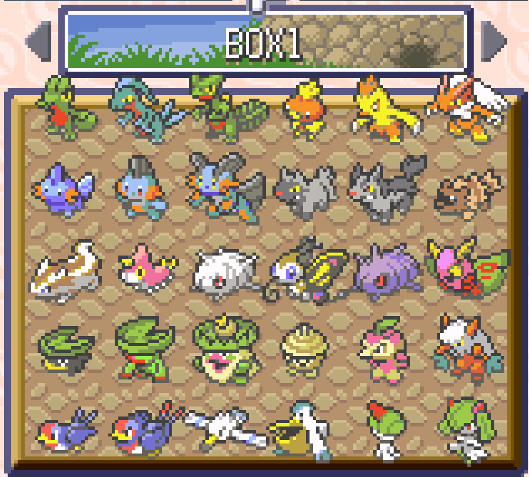
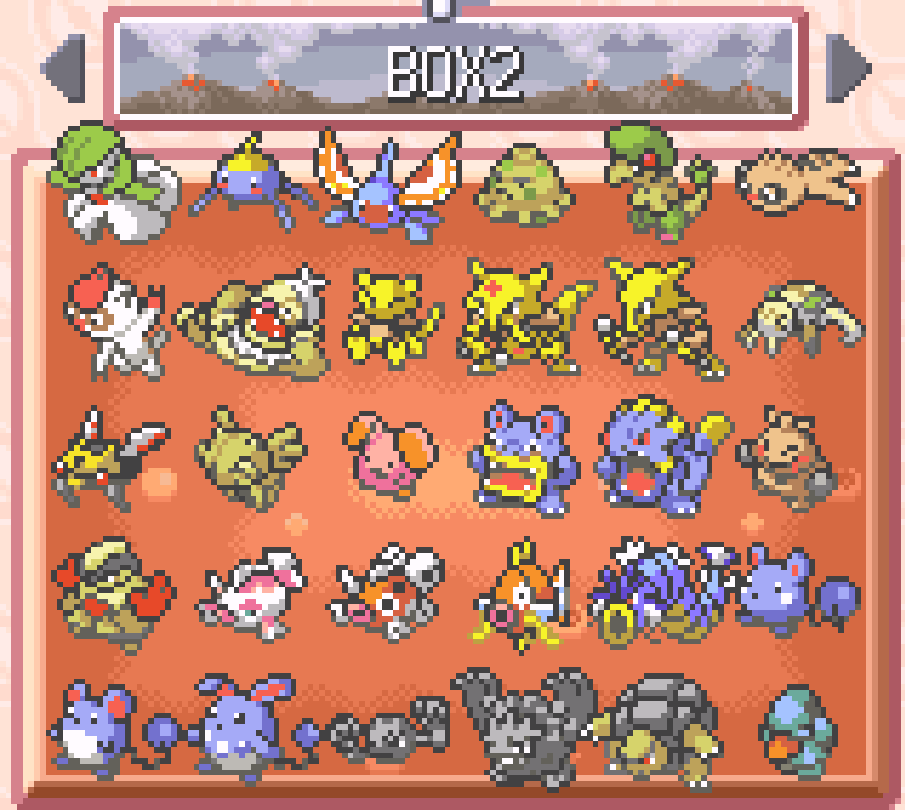
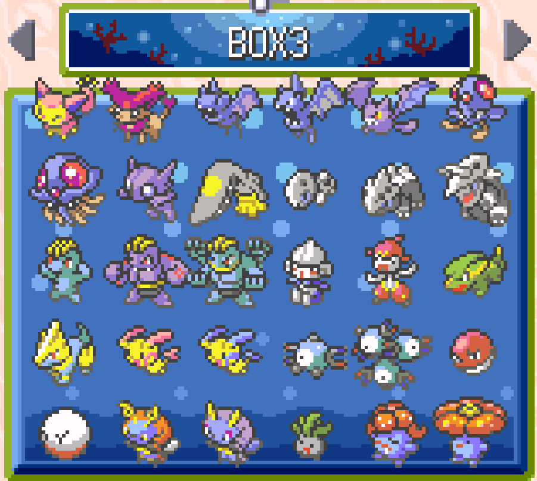
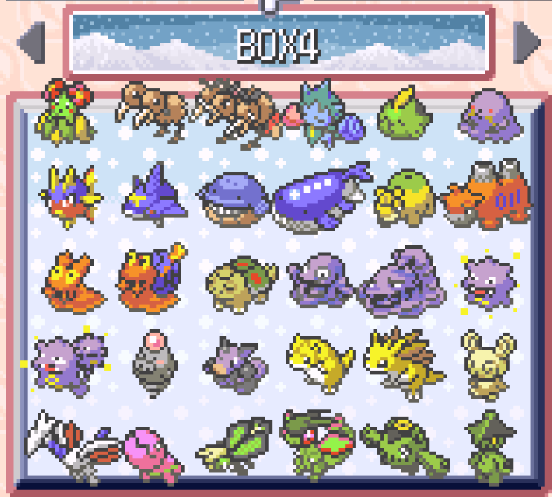
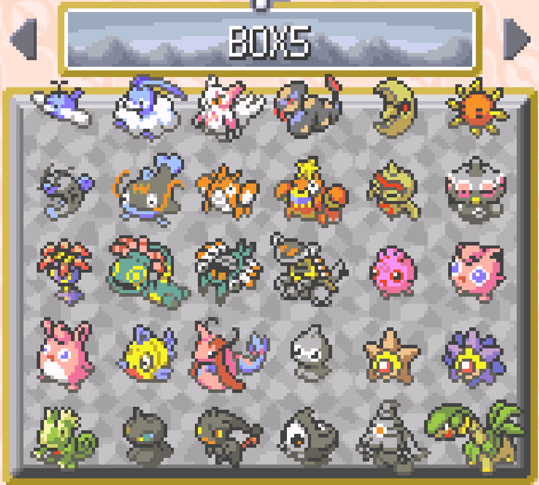
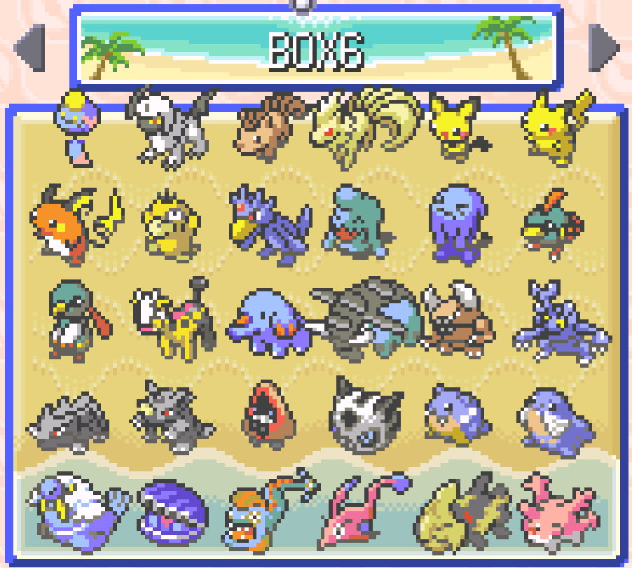
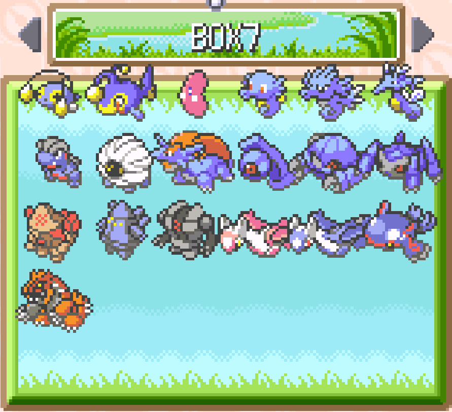
I am not the most qualified to give advice but it is much easier to first beat the game then go back route by route catching mons due to having abilties such as fly and mons that are strong and learn flase swipe. I personally use a smeargle lvl 100 with false swipe, spore, mean look, and taunt.
Other than trades which I did via mGBA multiplayer with myself, the most painful mons were a toss up between chimecho and milotic.
Here is the download for my save file for emualtors
Save File Download (.State)